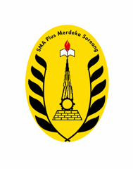

<!doctype html>
<html lang="id">
<head>
<meta charset="utf-8">
<meta name="viewport" content="width=device-width, initial-scale=1">
<title>Induk Pembiayaan — SMA Plus Merdeka Soreang</title>
<link rel="preconnect" href="https://fonts.googleapis.com">
<link rel="preconnect" href="https://fonts.gstatic.com" crossorigin>
<link href="https://fonts.googleapis.com/css2?family=IBM+Plex+Sans:wght@400;500;600;700&display=swap" rel="stylesheet">
<link rel="stylesheet" href="assets/dasar.css?v=2">
<link rel="stylesheet" href="assets/style.css?v=9">
</head>
<body>

<div id="layar"></div>

<template id="tpl-utama">
<div class="app">
  <aside class="sidebar">
    <div class="brand">
      
      <div><b>SMA Plus<br>Merdeka Soreang</b>
      <span>Induk Pembiayaan</span></div>
    </div>
    <nav id="nav">
      <button data-hal="beranda" class="on">Beranda</button>
      <button data-hal="hadir">Kehadiran dan Piket</button>
      <button data-hal="nominal">Penggajian</button>
      <button data-hal="tunjangan">Tunjangan dan Potongan</button>
      <button data-hal="rekap">Honor dan Transpor</button>
      <button data-hal="identitas">Identitas Dokumen</button>
    </nav>
    <div class="foot">
      <b id="fPetugas">—</b>
      <span id="fPeran">—</span>
      <button id="bKeluar">Keluar</button>
    </div>
  </aside>
  <main id="isi"></main>
</div>
</template>

<div id="modal-root"></div>
<div id="toast-root"></div>
<div id="busy-root"></div>

<script src="assets/kop-dokumen.js?v=3"></script>
<script src="assets/app.js?v=35"></script>
</body>
</html>
